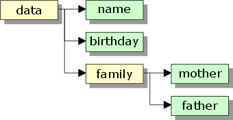

DIM
Syntax
DIM [ Scope ] Variable_Name [ [Size1 [, Size2 [\... ]] ] ] as Value_Type [ = [ Initialization ] Initial_Value ]
|
Argument |
Description |
|
[ Scope ] |
Optional. Default = "LOCAL". See Variable Scope.
|
| |
|
Variable_Name |
The name of the variable to be created. See Legal Variable Names. |
|
[Size1 [, Size2 [... ]] ] |
When declaring a variable as an array, you can supply the maximum subscript value or a range of values in brackets. For example, the following statement declares a five element array of character strings: dim names[5] as C |
|
The following statements declare a five element array of character strings: dim names[5] as C dim names[1..5] as C dim names[0..4] as C Arrays with multiple dimensions : dim names[1,3,5] as C Multiple elements dimmed in a single line : dim ab[2] as C, cd[3] as C You can also dynamically re-dimension arrays at runtime. Initially, define the variable as follows: dim vars[] dim vars[0] then change the array size as necessary. For information on dimensioning arrays, see Arrays. | |
|
Value_Type |
The variable type is indicated through the Value_Type, a single character:
Pointer variables may contain sub-elements, for example: dim names[6] as P dim names[6].firstnames as C dim names[6].lastnames as C dim names[6].children[3] as P dim names[6].children[3].firstnames as C dim names[6].children[3].lastnames as C |
|
The name of a class. dim NewClass as {ClassName} | |
|
Optional. Default = "".
dim firstname as C = "Fred" dim birthday as D = {08/03/1992} dim age as N = 12 dim when as T = ctodt("08/03/1992 3:23:34 pm") dim married as L = .F. | |
|
Initial_Value |
Optional. The initial value to assign. |
Description
DIM is used to declare, allocate, and optionally initialize a variable.
You can add the SHARED, or GLOBAL, statement to the DIM statement to set the scope of the variable. When a variable is defined in a script, it can be either local, shared, or global. A local script variable exists only for the duration of the script and is destroyed when the script terminates. By default, a variable created in a script is local. In contrast, a shared script variable is remembered after the script is run and can be used again by the script in which it was defined, or by any other script in the current session. A global variable is available to scripts in all Alpha Anywhere sessions.
 Note : A second DIM
statement that redefines an existing variable does not
cause an error. The value of the original variable is retained.
Note : A second DIM
statement that redefines an existing variable does not
cause an error. The value of the original variable is retained.
Refer to Variable Scope, Variable Data Types, and Declaring a Variable for more information.
The "A" type is a special type that will accept any data type. For example:
|
dim special_var as A Special_var = "Name" Special_var = date() Special_var = 123 |
In this example, after each assignment statement, the variable has a different type.
When you wish to want to dimension a structure with multiple levels, you must place each new sublevel below a pointer variable. For example, you must dimension data as type pointer before creating name, birthday, and family. And you must dimension family as type pointer before creating mother and father.
|
dim data[4] as P dim data[1..4].name as C dim data[1..4].birthday as D dim data[1..4].family as P dim data[1..4].family.mother as C dim data[1..4].family.father as C |

 Note : In the example
above the first line says dim data[4] as P,
but the second line says dim data[1..4].name as C.
The [x..y] syntax is required when you dimension
pointer sub-elements.
Note : In the example
above the first line says dim data[4] as P,
but the second line says dim data[1..4].name as C.
The [x..y] syntax is required when you dimension
pointer sub-elements.
The DIM command also supports a special option which allows you to define a structure (using the TYPE command), and then declare variables using this structure. See example below.
 Note : A special type
of variable can be created using the CONSTANT
command. Once a value is assigned to a constant variable, it cannot be
changed.
Note : A special type
of variable can be created using the CONSTANT
command. Once a value is assigned to a constant variable, it cannot be
changed.
Examples
|
dim flds[256] as C 'a 256 element array of character values dim shared flag as L 'a shared variable called flag dim field_value as D 'a local value, explicitly declared dim tbl as P 'a pointer variable ' Declaring Variables Using a Structure ' Define the structure. type customer name as C company as C phone as C age as N end type dim cust as {customer} ? properties_enum(cust) = "NAME COMPANY PHONE AGE " dim custs[10] as {customer} ? properties_enum(custs[1]) = "NAME COMPANY PHONE AGE " dim x as C = "one" ? x = "one" ' x exists so dimming as "two" does not work dim x as C = "two" ? x = "one" x = 5 dim x as N = default 8 ? x = 5 delete x dim x as N = default 8 ? x = 8 |
The following example creates a variable named fn of type F. It then equates fn to the bar function. Afterwards, calling fn() is equivalent to calling bar().
|
function bar as V ( msg as C ) ui_msg_box("bar", msg ) end function dim fn as F fn = bar fn("hello") |
The following example creates a function named foo that receives an argument named func of type F. Afterwards, calling foo() with a second function name as a parameter allows you to call that second function.
|
function foo as v ( func as F ) func("Hello") end function function bar as V ( msg as C ) ui_msg_box("bar", msg ) end function function blah as V ( msg as C ) ui_msg_Box("blah", msg) end function foo(bar) foo(blah) |
See Also
What is a Variable?, REDIM, DELETE, TYPE ... END TYPE